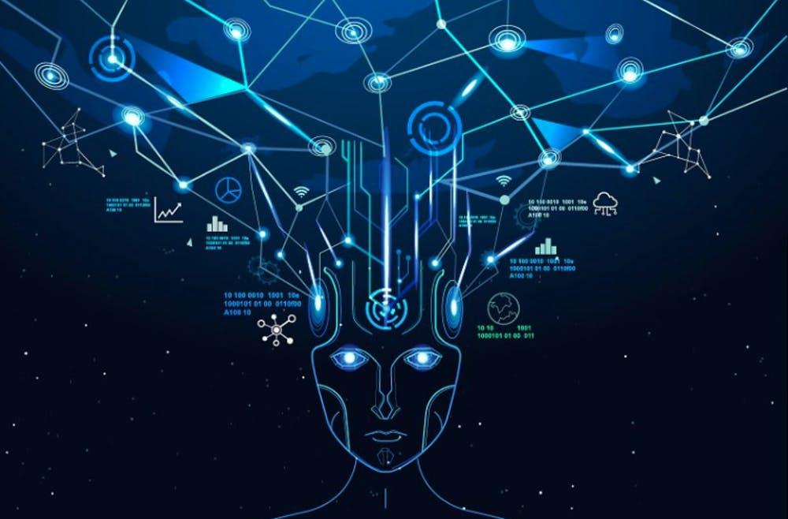

Technologies taking over humans
Computerization of human lives was the beginning of the end of all the
traditional methods and non-automated devices. Ever since the evolution
of computers and the introduction of automation the human lives have gone
through drastic changes. Considering how many technological advances have
impacted our lives, one can say that there is no limit to technological
advancements. In the beginning, computers astounded the whole world and
now AI, IoT, 5G, AR/VR.
AI 
IoT  5G
AR/VR
5G
AR/VR